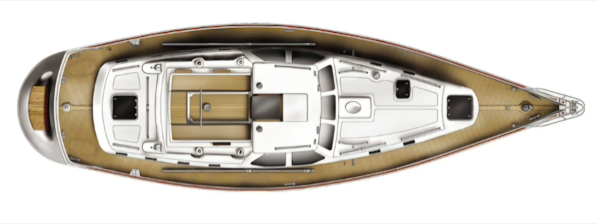

ZORBA
…
STERNBOW PORTSTARBOARDVictron · power
BMV via Bluetooth → ShellyBattery & solar
Charge %Battery ASolar AAlternator A
Loading history…
| Reading | Value | Unit | Updated |
|---|
In the Shelly app open User settings → Authorization cloud key. Copy the key and the server address here. They are saved only in this phone's browser.
Switch each alert on or off and set its limit. Saved on this phone only.
Calibrates the tank that is connected now (tap a gauge to swap between FWD and BACK). Look at the real gauge and tap how many lights it shows. Each tap saves the current sender voltage for that number (on this phone). Two or more points make the ZORBA gauge follow the tank.
Where the items sit on the deck plan is saved on this phone. Copy it to send it to Shilla, or go back to the built-in arrangement.

STERNBOW PORTSTARBOARD| Reading | Value | Unit | Updated |
|---|
BMV field names are read from the Shelly script's virtual numbers 200–205 (SOC, voltage, current, power, consumed Ah, time to go). Temperatures update when the Bluetooth sensors report, usually every few minutes.